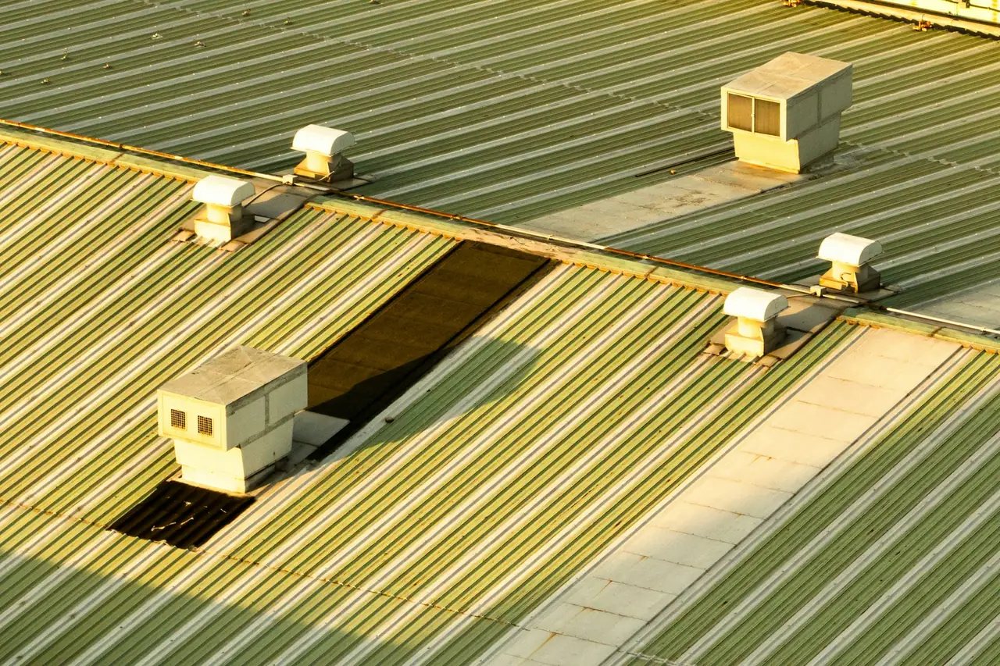

Augmentez votre albédo !
Cool roof sur toiture en bac acier
Les couvertures en bac acier équipent une grande partie des ateliers, entrepôts et bâtiments agricoles. Minces et sans inertie, elles transmettent vite la chaleur du soleil au bâtiment, surtout quand elles sont peu isolées.
Le support
Pourquoi traiter une couverture en bac acier
Le bac acier est une tôle nervurée, le plus souvent prélaquée : verte, grise, rouge, bleue ou brune. Cette teinte décide de la part du soleil absorbée. Une toiture traditionnelle sombre absorbe 85 à 95 % du rayonnement solaire (US EPA) ; le métal mince, sans inertie, en restitue rapidement la chaleur à l’intérieur.
Sur un bâtiment en simple peau, sans isolant sous la tôle, cette chaleur descend presque directement dans le volume : c’est le cas de nombreux ateliers, hangars et bâtiments de stockage anciens. Avec une isolation sous couverture ou des panneaux sandwich, elle passe moins, mais la toiture reste un des premiers postes d’apports solaires d’un bâtiment de plain-pied.
Un revêtement réfléchissant renvoie l’essentiel de ce rayonnement avant qu’il ne chauffe la tôle. C’est aussi l’occasion de reprendre un laquage passé et de traiter les premiers points de corrosion, avant qu’ils ne s’étendent.
Bâtiments concernés
- Ateliers et sites de production
- Entrepôts et plateformes logistiques
- Magasins et surfaces commerciales
- Bâtiments d’élevage, de stockage et de transformation agricoles
- Gymnases, hangars et bâtiments techniques
Source : US EPA, Cool Roofs.
Avant les travaux
Ce que nous examinons sur une toiture en bac acier
La visite de la toiture conditionne le choix du système et la durée de vie du revêtement. Sur le métal, nous regardons en particulier les points suivants.
Le déroulé complet d’un chantier- La corrosion : rouille de surface ou perforante, rives et coupes de tôle, recouvrements.
- Les fixations : vis, cavaliers et rondelles d’étanchéité vieillies ou desserrées.
- Les recouvrements et faîtages : jonctions entre plaques, closoirs, abergements.
- Les plaques éclairantes et lanterneaux : à protéger, à ne pas recouvrir, et fragiles.
- La pente et l’écoulement des eaux : chéneaux, gouttières, zones où l’eau stagne.
- L’isolation et l’usage du bâtiment : chauffé, climatisé, ventilé, ce qui conditionne le bilan été comme hiver.
- Les équipements en toiture : extracteurs, gaines, exutoires, panneaux photovoltaïques.
Mise en œuvre
Les étapes sur une couverture métallique
Les produits, les épaisseurs et les conditions d’application suivent la fiche technique du fabricant du système retenu.
Nettoyage
Lavage de la toiture pour retirer salissures, mousses et parties non adhérentes, avec une pression adaptée au support.
Corrosion
Brossage des zones rouillées, puis primaire anticorrosion là où le métal est attaqué.
Points singuliers
Reprise des fixations défectueuses et traitement des recouvrements selon le système choisi.
Primaire
Primaire d’accrochage choisi pour le métal et le laquage d’origine.
Couches réfléchissantes
Application aux épaisseurs prescrites, puis contrôle de l’ouvrage et de la consommation de produit.
Points de vigilance
Ce qui fait la différence sur le métal
Les plaques éclairantes
Elles ne supportent pas le poids d’une personne. Le chantier prévoit des protections contre les chutes au travers des matériaux fragiles, et ces plaques restent dégagées pour continuer à éclairer le bâtiment.
L’humidité et la rosée
Une toiture métallique se couvre facilement de rosée le matin. On attend que le support soit sec, dans les plages de température et d’hygrométrie prévues par le fabricant.
La dilatation
Le métal se dilate au soleil et se rétracte la nuit. Le revêtement doit rester assez souple pour suivre ces mouvements : c’est une des caractéristiques à lire sur sa fiche technique.
Les garanties existantes
Si la couverture est récente, vérifiez les conditions de garantie de son fabricant avant d’y appliquer un revêtement.
Résultats
Ce que vous pouvez attendre
Au plus chaud de la journée, une toiture réfléchissante reste environ 28 à 33 °C plus fraîche en surface qu’une toiture traditionnelle (US EPA). Sous une couverture métallique peu isolée, cette différence se ressent directement dans le bâtiment.
Si le bâtiment est climatisé, les économies se calculent à partir de sa consommation : 20 % de la climatisation en moyenne dans les études recensées par l’US EPA, de 2 à 40 % selon les cas. Pour un bâtiment tertiaire à usage commercial, la prime CEE BAT-EN-112 peut réduire l’investissement.
Questions fréquentes
Vos questions sur le bac acier
Vous ne trouvez pas votre réponse ? Écrivez-nous à contact@albedia.eu.
Toutes les questions sur le cool roofPeut-on appliquer un cool roof sur un bac acier rouillé ?
Oui, tant que la tôle n’est pas percée. Les zones rouillées sont brossées puis traitées avec un primaire anticorrosion avant les couches réfléchissantes.
Une tôle perforée ou trop affaiblie se remplace avant tout revêtement : le diagnostic de la toiture le détermine.
Faut-il recouvrir les plaques éclairantes ?
Non. Les plaques éclairantes et les lanterneaux doivent continuer à faire entrer la lumière : ils sont protégés pendant l’application. Ils sont aussi fragiles, ce que le chantier prend en compte pour éviter tout risque de chute.
Un cool roof sur bac acier sert-il si le bâtiment n’est pas climatisé ?
Il n’y a alors pas de facture de climatisation à réduire, mais la chaleur sous une couverture métallique peu isolée baisse nettement. Une toiture réfléchissante dépasse la température de l’air de 6 à 11 °C seulement en été, contre 31 à 47 °C pour une toiture classique (US EPA).
Le revêtement isole-t-il la toiture ?
Non. Il renvoie le rayonnement du soleil, ce qui limite l’échauffement de la toiture, mais il ne remplace pas un isolant. Les deux se complètent : l’isolation agit été comme hiver, le revêtement surtout l’été.